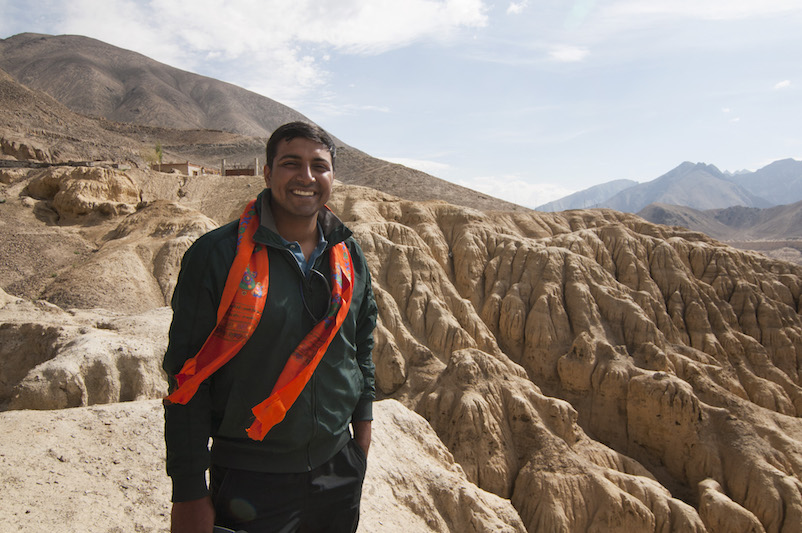
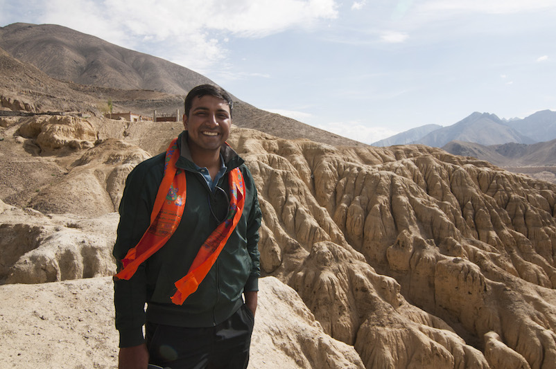

Psychologist, Abu Dhabi, UAE
“To live is to travel” the famous writer and Dane H.C. Andersen said, and I couldn’t agree more with him. It describes perfectly the feeling I had during and after this unique and extraordinaire experience. It was challenging, fun, rewarding, amazing. Up there in the mountains you feel totally free and alive, a vivid and life enhancing experience without a doubt. It was tough, it was magical, it was a real adventure. The people we met on our way live a simple, uncomplicated life often battling with the elements and harsh landscape they are surrounded by and still they surrounded us with a warmth and a welcome that amazed. The times I shared with my fellow adventurers can never be taken away or forgotten.


 
